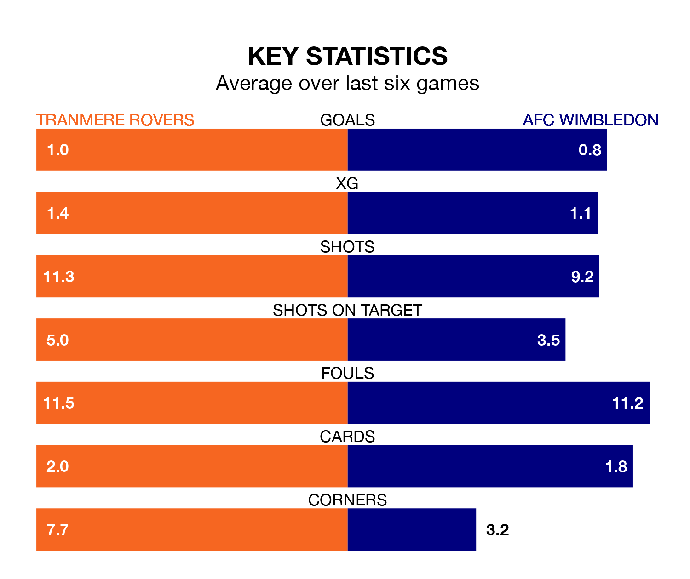

AFC Wimbledon travel to Tranmere Rovers on Saturday in EFL League Two.
The visitors come into the game on the back of a defeat in their last match, having lost to Swindon Town 3-2 away, with goals from Joe Lewis.
Tranmere, meanwhile, won their last match, 2-1 against Newport County, with their goals scored by Robert Apter.
In Alex Bass, Wimbledon can rely on one of the league's safest pair of hands. He has kept 16 clean sheets in his 44 appearances this season, and only one other 'keeper – Stockport County's Ben Hinchiffe – has been able to prevent the opposition scoring on more occasions in EFL League Two.
In Tranmere's net, Luke McGee has eight clean sheets in 43 games. He has conceded a goal every 67 minutes, 30% more often than the 88 minutes between goals for Bass.
With 57 goals in 44 games so far this season, the Dons are scoring at below the league average rate with 1.3 goals per game. But they are conceding fewer than average too, letting in 47 goals at a rate of 1.1 per game.
Rovers are also below average scorers, with 1.4 goals per game, compared to a league average of 1.5. They have conceded 1.5 goals per game.
The hosts are in mixed form in EFL League Two, with two wins and a draw from their last six games.
With a win and two draws over that period, the away team's form is slightly worse – they have taken five points from 18, compared to Tranmere's seven.
Tranmere are 17th in the table after 44 games, of which they have won 16 and drawn six, earning 54 points.
Wimbledon are seven places ahead of Rovers in 10th, with 16 wins and 14 draws putting them on 62 points.
In the last five years, Tranmere and Wimbledon have played each other on four occasions. Tranmere won one of them, Wimbledon two, and they drew once.
On average, Tranmere scored 0.8 goals and the Dons 1.8 in those matches.
Their last meeting was on September 30, when Wimbledon won 4-1 at home.
Updated: 11:31 (UTC), 15/04/24